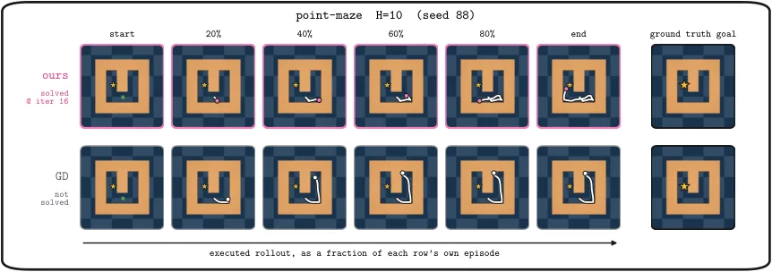
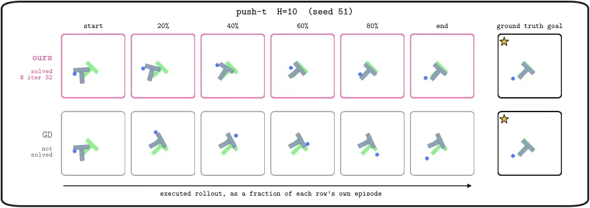
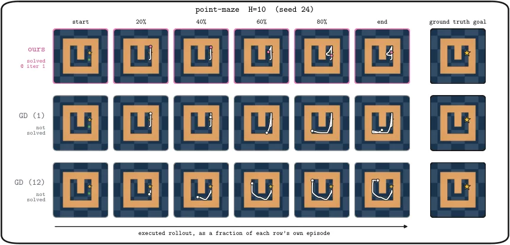
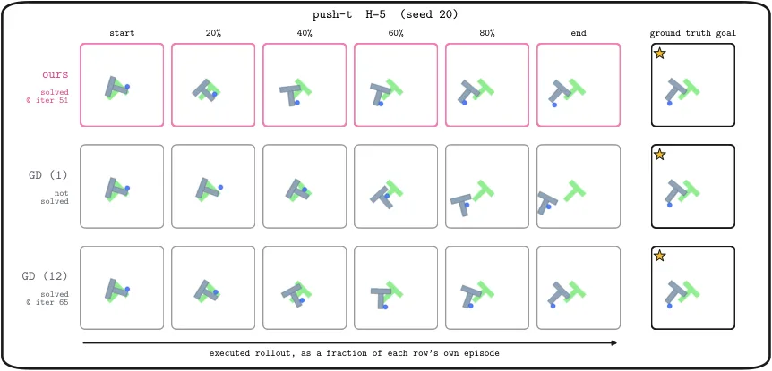

潜空间规划即序贯蒙特卡洛：粒子群 + 梯度更新 + 图上的代价势
Latent Space Planning with Sequential Monte Carlo
一句话：与其让规划器在潜空间里瞎采或硬爬坡，不如让一群粒子先按重要性权重走向目标分布，再用梯度把「计划」本身拉过去，并用图上的测地代价告诉粒子哪边通。
success rate
paired seeds
PDE cost gain
success rate
作者、单位与技术谱系 · Research context
作者与单位
研究脉络
- Cuin 等：SMC 作为随机优化的 E 步（2025/2026）方法基座关系：提供 JALA（ULA + Jarzynski 重加权）与 Fisher 恒等式下的梯度估计，本文把它从「优化模型参数」改写成「优化计划本身」。[SMC 规划原文 §3.3 式(6)]
- MPPI / 路径积分控制（Williams 等）方法上游关系：提供「用代价加权分布更新计划」的对照框架与最强基线，本文用粒子+重要性权重替代其每轮重新高斯采样。[SMC 规划原文 §1、Table 1]
- 热方法（Crane 等）与经典 cost-to-go方法上游关系：提供在图上用一步后向欧拉热方程近似测地距离的做法，本文把它用在离线数据潜状态的 roadmap 上。[SMC 规划原文 §3.4、§4.4]
合作网络
- Purdue × AdobePurdue University → Adobe Systems关系：共同署名（校企合作）[arXiv 摘要页]
- Purdue × Saarland UniversityPurdue University → Saarland University关系：共同署名（跨机构）[arXiv 摘要页]
- SMC 规划 → DINO-WM / LeWMSMC 规划器 → DINO-WM、LeWM关系：技术依赖（世界模型基座）[SMC 规划原文 §4.1]
作者单位取自论文首页与 arXiv 元数据；SMC、MPPI、热方法的接续取自正文显式引用；末位作者是否通讯未标注，仅记录署名位置。未发现导师/师生关系的公开证据。
方法本质拆解 · What actually changed
是不是微调？
不训练世界模型，也不训练规划器：world model 全程冻结，提出的方法只在推理时迭代。唯一「离线」的构建是 roadmap（对数据集潜编码建图）与两个环境相关的超参（热方程时间步 t 与近邻数 κ），它们只用离线数据选择。
有没有额外约束？
目标分布由参考高斯 q(a|μ) 与 exp(−C/α) 相乘给出，等于把搜索限制在计划附近的信赖域内；代价里加动作 L2 惩罚并按视界 H·m 归一化；PDE 代价只用排序而非绝对量级，并用 λ_V 按初始粒子上的标准差比值缩放，避免量纲失衡。
推理/后端到底做了什么？
每次迭代：对 N 个粒子各做一次 ULA 步（需要对世界模型反传得到动作梯度），用 Jarzynski 比率修正权重，ESS 低于阈值时系统重采样，然后用加权粒子均值偏移更新计划 μ（Adam）。每轮结束后把当前计划放到仿真器里执行一次判定成功，成功即停，因此「迭代数」是首个成功迭代的序号。
方法本质是什么？
本质是把「规划」看成对动作序列分布做贝叶斯推断：粒子负责保留多模态假设并按重要性权重迁移，梯度步负责把分布中心拉向低代价区，PDE 代价则把「图上离目标多远」这一全局信息注入到每个候选的评分里。它改变的是长时程搜索里「探索」与「收敛」二选一的困境，代价是需要对世界模型反传、且收敛性没有保证。
输入是冻结世界模型、离线数据建的 roadmap 与目标潜状态，粒子按重要性权重迁移、计划按加权梯度更新、代价用图上热核排序引导，直接得到一条可执行的动作序列。

桥接价值Bridge
桥接价值
这篇对我们的直接价值是「用一群带权粒子 + 一次梯度更新去替代反复重采样」这一结构，它同时具备了滤波的探索性和优化的收敛性；我们做位姿图优化或重定位时，初始化常常就是这类问题——需要在多模态假设里探索，又要局部收敛。更有用的是它把「代价」定义成离线数据上的图测地距离：不需要环境模型，只要一段离线轨迹就能构造 roadmap 并算出绕障代价，这和我们用共视图构造关键帧图的做法非常接近。
方法与模块Method
方法摘要
状态是潜空间里的完整动作序列（视界 H）。目标分布写成「以当前计划 μ 为中心的参考高斯 × exp(−C/α)」，温度 α 取初始粒子代价的标准差。每次迭代两步：SMC 步对每个粒子做一次 ULA 更新（带噪声的梯度步），用 Jarzynski 修正累乘权重，归一化后算有效样本数 ESS，低于 τN 时系统重采样；优化步则用加权粒子的均值偏移算出计划梯度（−σ_p⁻² Σ w_i (a_i − μ)），交给 Adam 更新 μ。代价由三部分组成：末端潜状态到目标距离、动作 L2 惩罚、以及在 roadmap 上算出的 PDE cost-to-go；后者对热方程做一步后向欧拉，取 −log u 的归一化排序（而非绝对量级，因为 Varadhan 估计对幅值误差敏感）。
可迁移模块
第一是 roadmap + 热方法的代价构造：节点是离线数据潜编码，边由观测到的转移加上 k 近邻建立，亲和度用高斯核，一步后向欧拉得到场，再取排序当成本——这套流程完全离线、不需要环境几何，可以直接搬到我们的关键帧共视图上做重定位代价。第二是 ESS 触发的重采样：只在权重退化时才重采样，避免每步都重采带来的多样性损失，这一条在我们做多假设跟踪时同样适用。第三是 paired-seed 评估：报告「我方解出而基线未解出」与反向的种子数，比单看成功率更能说明两种方法是否在解同一批问题。

证据Evidence
关键证据与数字
在 12 粒子、150 次迭代、每格 100 seeds 的同等预算下：Reacher H=10/H=15 为 100%/89%，对照 MPPI 78%/67%、GD 38%/15%、CEM 42%/41%；Push-T H=5 为 93% 对 MPPI 83%；Wall H=5 为 92% 对 78%；Point maze H=10 为 98% 对 95%，但 H=15 时 MPPI 以 97% 对 96% 略高；Cube（H=5，50 seeds）88% 对 MPPI 86%、GD 84%、CEM 78%、GRASP 52%。配对种子统计显示，本文解出而 GD 未解出的有 375 个种子，反向只有 29 个；对 GRASP 是 607/9，对 CEM 是 436/22，对 MPPI 是 142/53。相对需要额外训练网络的规划器（LeFlow 12/64 条路径、GC-IDM）在每个设置上都更高（p<0.01），例如 Cube 上 88% 对 58%/62%/56%。
边界与下一步Limits & Next Step
边界与风险
作者明确承认：耦合的 SMC 与优化迭代没有收敛保证，留作未来工作；PDE 代价的效果取决于 roadmap 的覆盖与表示能力。失败分析也诚实：Wall 的 H=10/15 与 Reacher 的 H=15 上，许多失败计划的潜目标距离低于成功中位，但终点位置误差 6.1/7.1 m 超过 4.5 m 的判据，说明「潜距离」与「真实到达」并不一致；Push-T 则是相反问题（优化不足，21 个基线独有种子中只有 7 个达到相应潜距离）。我们的待核验项：没有 wall-clock 与显存对比，12 粒子的预算对高维动作空间是否够用未知；PDE 代价在 Wall 上反而低 8/7 个点（不显著），说明它并非普遍更好；只在 LeWM 与 DINO-WM 两个模型上验证；所有试验是开环规划一次执行，没有闭环重规划的结果。
下一步实验
最小实验一：在我们已有的关键帧共视图上构造 roadmap（节点=关键帧的视觉/几何描述子，边=共视或里程计转移），用一步热方程算出 cost-to-go，接进现有的重定位搜索，与「纯描述子距离排序」比较前 N 个候选的命中率与所需候选数。最小实验二：把 SMC + 优化步的耦合结构用在一个低维后端问题上（例如 2D 位姿图的多假设初值搜索），在相同评估预算下与 CEM、MPPI 比较收敛迭代数，并用 paired-seed 口径报告差异。





